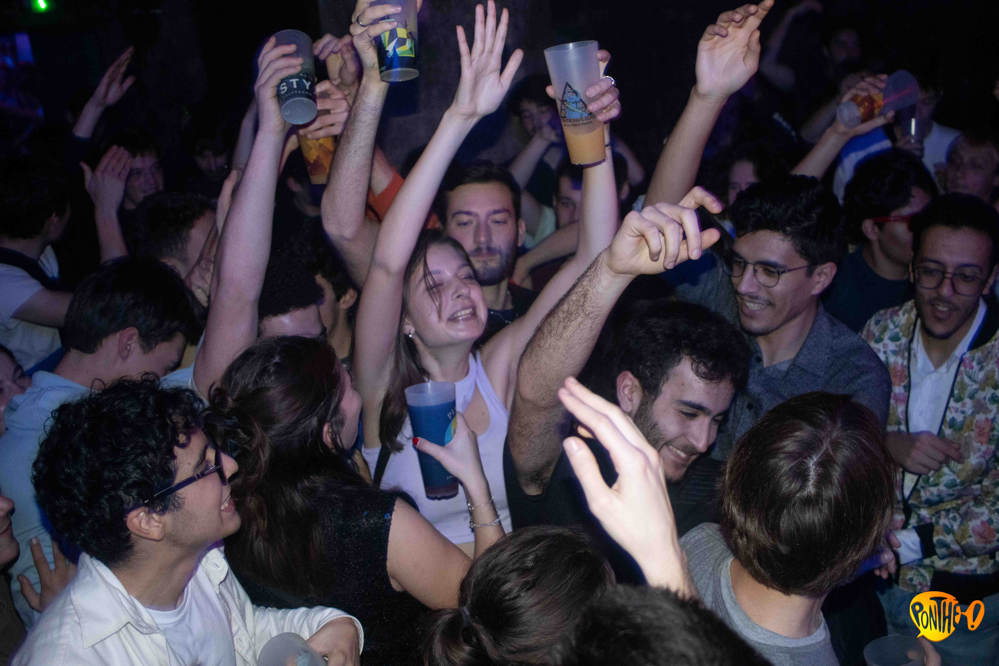

Chronique des Ponts - Épisode 1
Soirée type de Théophane, maître goodiseur aux Ponts
16/03/2022
17h30 : Théophane fait l’inventaire de sa collection d’écocups, pour la 3e fois de la journée. Son regard s’attarde avec émotion sur ses plus belles pièces, goodisées au prix d’amitiés brisées, de sang et de larmes. Il prend une grande inspiration en caressant sa pipornhub : ce soir, il profitera de la soirée garage pour achever sa collection avec l’ecocup la plus puntée parmi toutes : la mythique Pontvaliers.
17h45 : La porte claque et le fait sursauter ; Kevin, son coloc, vient de rentrer de cours. Théophane ferme précipitamment le placard au-dessus du micro-onde – sa planque – pour l’observer avec méfiance : a-t-il aperçu son contenu ? Après un échange de regard interminable, Théophane finit par comprendre qu’Kevin attend simplement qu’il ne lui libère le passage vers les toilettes. Il s’exécute. Il le suit du regard jusqu’à ce qu’il ait refermé la porte derrière lui.
18h30 : Ça s’agite sur Messenger ; ses potes veulent faire un before avant le foyer, mais dans quelle chambre ? Kevin a beau être parti chez quelqu’un d’autre, Théophane se garde bien de se porter volontaire : et si quelqu’un découvrait sa planque ? Théophane le sait mieux que quiconque ; dans la course aux goodies on ne peut faire confiance à personne. Surtout pas à ses propres potes.
19h : Rémi a cédé et s’est porté volontaire pour accueillir le before. Théophane avale une assiette de pâtes à la va-vite, saute dans sa plus belle paire de legging, attrape sa banane, avant de s’immobiliser devant sa collection de couvre-chefs, un peu moins impressionnante mais toute aussi complète. Exponrateurs ou PEP ? PEP ou Alibabar ? Théophane décide finalement de rester tête nue. Un bob se perd trop facilement sur une piste de danse.
19h45 : Théophane débarque enfin chez Rémi ; il est le dernier arrivé. Il lui a fallu énormément du temps pour choisir son écocup. Il a opté pour celle du WEI, possédée par 94 % de la promo, et donc peu précieuse. A l’intérieur, tout le monde est déjà bien alcoolisé et prêt à décaler. Théophane trempe des lèvres dans une bière sans vraiment en boire. Il la gardera à la main toute la soirée. Il ne boit jamais les soirs de chasse.
19h52 : Départ pour le garage. Théophane profite du mouvement vers la sortie pour attraper discrètement la paire d’Air Jordans quasi-neuves de Rémi. Goodiser n’est pas voler, après tout.
19h59 : Arrivée au garage, après un détour par sa chambre pour y déposer ses nouvelles baskets. Il y a déjà pas mal de monde. Théophane se poste à un point stratégique, de façon à pouvoir embrasser la piste du regard. Son œil affuté repère les pièces les plus intéressantes à droite et à gauche : une écocup Yakuzart à 4 heures. Un bonnet Pontdawan à 10 heures. Des lunettes de soleil Expontrateurs à 16 heures. La pêche s’annonce fructueuse.
20h01 : Théophane s’apprête à passer à l’attaque lorsqu’il se fait interpeller par Victorine, sa voisine en TD de MMC. Il s’empresse de la rejoindre, tout content de la recroiser. Surtout, rester flegmatique et concis. « Tu passes une bonne soirée ? » « Ouais.» Théophane passe la main dans ses cheveux, dans un mouvement entièrement calculé. « Oh ! J’adore ce son, pas toi ? » « A mi-chemin du New Wave et du rap psychédélique. Sympa et rafraîchissant. » Victorine prend le temps de boire une gorgée de vodka-redbull, permettant à Théophane de remarquer ce qu’elle tient à la main : un bracelet Spontdinave. Valeur estimée : très très puntée.
20h11 : Théophane quitte Victorine, son tout nouveau bracelet glissé sa banane. Désolé Victorine : Business is business. Il pose un pied sur la piste, retrouvant instantanément ses cibles de la soirée. Que la chasse commence !
23h57 : Théophane remonte dans sa chambre, très fier de lui. Il s’apprête à ranger son butin de la soirée lorsqu’il se statufie. Horreur ! Sa banane est ouverte et… VIDE. Pas une seule minute à perdre. Il dégaine son téléphone et lance une annonce sur Ponts objets Perdus. « Cherche quatre écocups, une paire de lunettes de soleil, deux bracelets et un bonnet. Forte valeur sentimentale. »

Image d'illustration d'une soirée aux Ponts
Chloé Kemgné